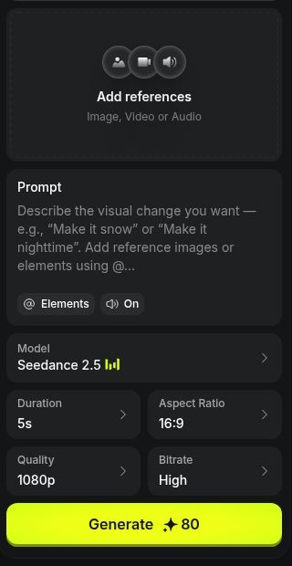
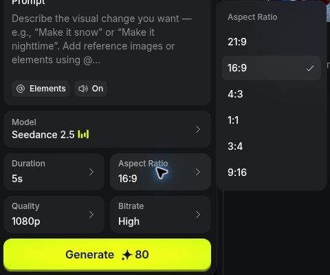
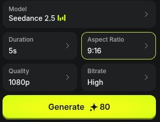
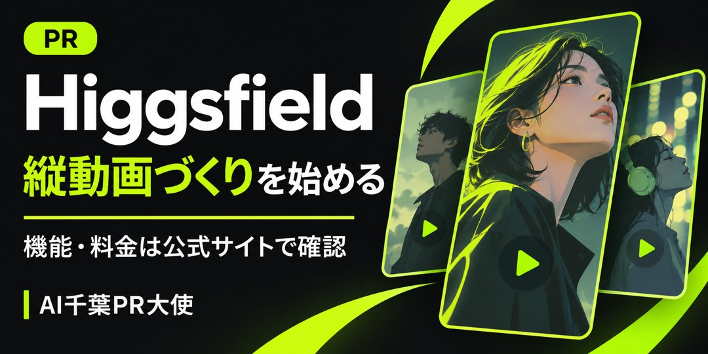

Higgsfieldで縦動画を作るには？ 9:16の設定場所を実画面で解説
PR この記事にはアフィリエイトリンクが含まれます。リンク経由で申し込みがあると、運営者に報酬が入る場合があります。
Higgsfield（ヒッグスフィールド）でリールやYouTubeショート用の動画を作るなら、最初に開きたいのが「Aspect Ratio」（縦横比）です。ここで「9:16」を選ぶと、スマホを縦に持ったときの形になります。今回は動画生成モデル「Seedance 2.5」の画面で、どこを押せばいいかを見ていきます。
1．「Video」を開き、現在の縦横比を確認する
Higgsfieldの「Video」を開いたら、設定欄の「Model」を見てください。下の画面では「Seedance 2.5」が選ばれています。「Aspect Ratio」の横にある「16:9」が、現在の設定です。先に来る数字が幅なので、これは横長です。

2．「16:9」を押して「9:16」に切り替える
現在の比率を押すと、選択肢が開きます。下の画像で、縦長の長方形が付いている「9:16」を選んでください。別のモデルで同じ選択肢が出てこないときは、使っているモデルが縦型に対応しているかを確認しましょう。

3．生成する前に、形と秒数を見比べる
メニューを閉じて「Aspect Ratio」が「9:16」になっていれば、縦型の設定は完了です。下の画面では「Duration」が「5s」、「Quality」が「1080p」です。つまり、この例で作ろうとしているのは縦長の5秒クリップです。

最後に、自分のアカウントで「Generate」ボタンのクレジット表示を確認してください。画像の「80」は、この日に未ログインで開いた画面の表示です。今回確認したのは比率の切り替えまでで、動画生成によるクレジット消費はありません。
縦の余白をどう使う？ カフェのリールを例に
例えば、コーヒーを紹介する5秒のリール。カップを画面いっぱいにすると、上に立つ湯気を見せる場所がなくなります。カップを中央より少し下に置けば、上半分を湯気が動くための空間として使えます。プロンプト（動きや構図の指示文）にすると、こんな形です。
窓辺のテーブルに白いコーヒーカップが一つ。カップ全体を画面中央より少し下に収める。細い湯気がゆっくり上にのぼる。カメラは固定。
これは構図を考えるための記入例です。作りたいカットが決まったら、設定欄で形と秒数を選び、指示文には「何を、どこで、どう動かすか」を書いてみてください。

【PR】Higgsfield公式サイトで機能と利用条件を確認する